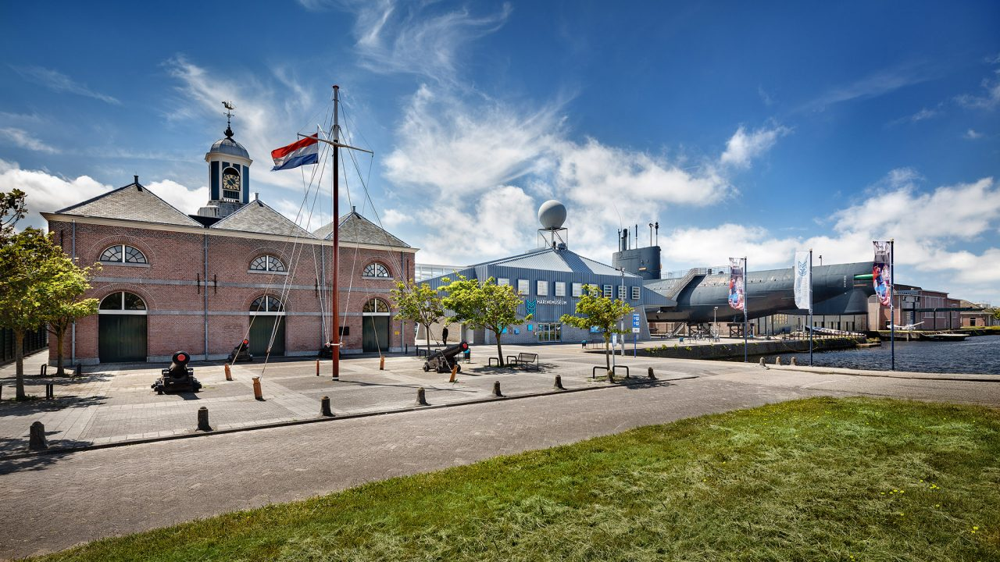
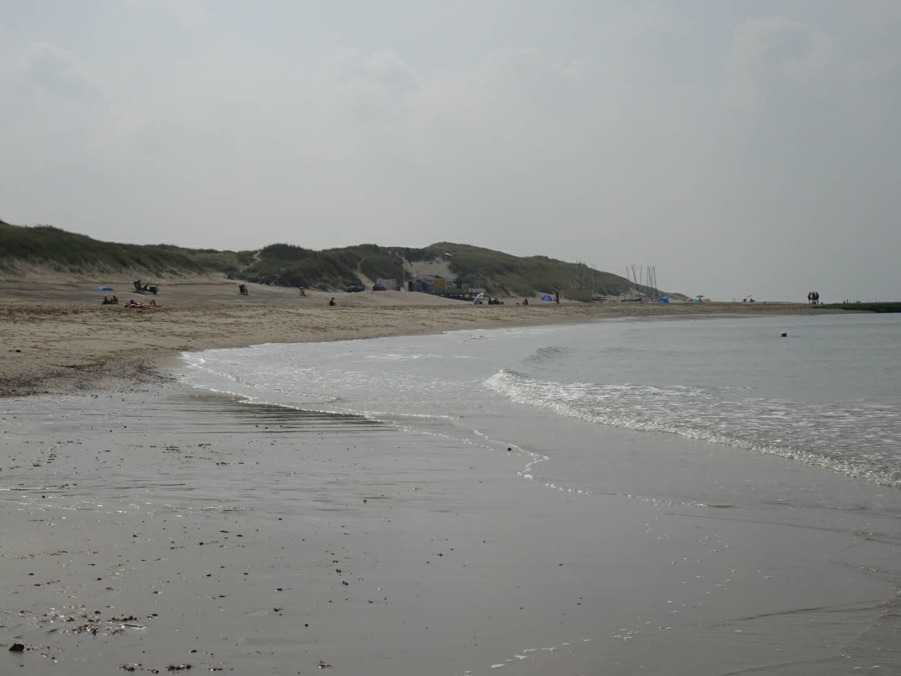

 Het Marinemuseum is gevestigd op de Oude Rijkswerf, ook wel Willemsoord genoemd. Het terrein is van de Koninklijke Marine, die sommige gebouwen nog altijd in gebruik heeft. Op het terrein, staan al een aantal objecten. Naast het hoofdgebouw vind je de Tonijn, ’s lands enige voor het publiek toegankelijke onderzeeboot. De museumschepen Abraham Crijnssen en Schorpioen liggen aan de andere kant van het gebouw Medemblik, dat bij de Marine in gebruik is. Verderop, aan het centrale plein, vind je het Brughuis van de Hr.Ms. De Ruyter. Je kunt je reis door het Marinemuseum ook beginnen in het langgerekte gebouw aan de Westgracht: de Geschutmakerij. Ook hier is een kassa, naast de museumwinkel. In dit gebouw vind je tentoonstellingen over de moderne marine en de geschiedenis van de werf. In de tentoonstelling Zeeslag! beleef je de Tocht naar Chatham (1667) en de Slag in de Javazee (1942). Voordat dit gebouw in 1915 als geschutmakerij in gebruik werd genomen, deed het dienst als magazijn voor onder meer gezaagde houtwaren en eiken planken.
 Het strand van Den Helder is ruim 7 kilometer lang en strekt zich uit van Huisduinen tot en met Julianadorp aan Zee. Voor een dagje strand kun je terecht op één van de 7 strandslagen, waarvan 3 bewaakte strandslagen met een Blauwe Vlag. Elke strandslag heeft een eigen karakter. Minder bekend is dat Den Helder een zeven kilometer lang strand heeft en een prachtig duingebied. Het strand is breed, relatief rustig en u kunt er gratis parkeren voor een dagje genieten in het zand en in de branding. De stranden hebben elk een eigen karakter en voordelen. Julianadorp staat al jaren in de top tien van de schoonste stranden van ons land. Duinoord heeft de meeste faciliteiten waaronder Beachclub Citadel, de beste strandtent van Den Helder. Duinoord ligt in het midden van het Helderse strand en is de best bereikbare opgang met een grote (gratis) parkeerplaats en mogelijkheden om ook als mindervalide naar het strand te gaan. In de zomer stopt hier ook de Kustbus die vanaf NS-station Den Helder naar het strand rijdt. Falga heeft een mooi breed en wit strand en is opvallend rustig. Links van de opgang van Falga is een naturistenstrand.